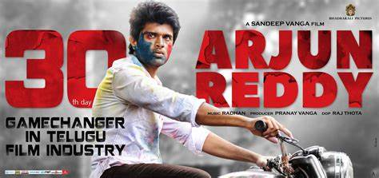

|
Sai Pallavi's Intro | Amaran | Sivakarthikeyan | Rajkumar Periasamy | Kamal Haasan | R. Mahendran
Amaran (transl. The Immortal) is a 2024 Indian Tamil-language biographical action war film directed by Rajkumar Periasamy and produced by Raaj Kamal Films International, together with Sony Pictures Films India. The film stars Sivakarthikeyan as Major Mukund Varadarajan, alongside Sai Pallavi, Rahul Bose and Bhuvan Arora. It is an adaptation of the book series India's Most Fearless: True Stories of Modern Military Heroes by Shiv Aroor and Rahul Singh, which contains a segment based on Mukund. The film follows Indhu Rebecca Varghese, Mukund's wife, who narrates the life of the Major on her way to New Delhi to receive the Ashoka Chakra, which was awarded posthumously to Mukund. |

|